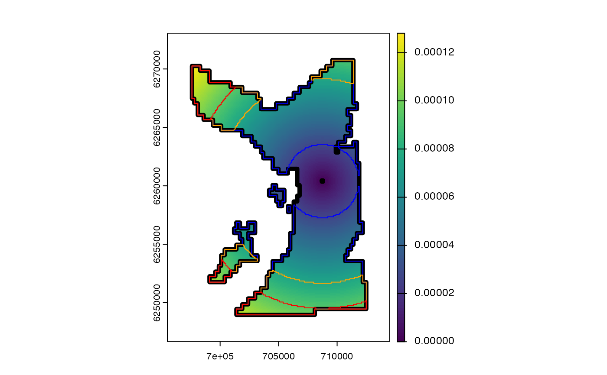

These functions extract 'home range' estimates from a SpatRaster that describes the intensity of movements within an area.
map_hr_prop(.map, .prop = 0.5, .add = FALSE, ...)
map_hr_core(.map, .add = FALSE, ...)
map_hr_home(.map, .add = FALSE, ...)
map_hr_full(.map, .add = FALSE, ...)A SpatRaster (utilisation distribution).
For map_hr_prop(), .prop is a number that defines the range proportion.
A logical variable that defines whether or not to add a polygon of the range to an existing map.
If .add = TRUE, ... is a place holder for additional arguments passed to terra::plot().
The functions return a SpatRaster. Cells with a value of one are inside the specified range boundaries; cells with a value of zero are beyond range boundaries. If .add is TRUE, the boundaries are added to an existing plot.
These functions are modelled on flapper::map_hr_*() functions, where full details are provided.
On Linux, these functions cannot be used within a Julia session.
map_*() functions build maps of space use:
map_pou() maps probability-of-use;
map_dens() maps point density;
map_hr_*() functions map home ranges;
All maps are represented as SpatRasters.
To derive coordinates for mapping patterns of space use for tagged animals, see:
coa() to calculate centre-of-activity;
pf_filter() and associates to sample locations using particle filtering;
library(terra)
#> terra 1.8.5
#>
#> Attaching package: ‘terra’
#> The following objects are masked from ‘package:spatstat.geom’:
#>
#> area, delaunay, is.empty, rescale, rotate, shift, where.max,
#> where.min
#> The following objects are masked from ‘package:testthat’:
#>
#> compare, describe
#> The following object is masked from ‘package:data.table’:
#>
#> shift
#### Set up example
# Define hypothetical input SpatRaster
r <- rast()
n <- ncell(r)
i <- 2e4
r[i] <- 1
r <- distance(r)
#>
|---------|---------|---------|---------|
=========================================
r <- r / global(r, "sum")[1, 1]
plot(r)
#### Examples
map <- map_hr_full(r, .add = TRUE, lwd = 5)
map <- map_hr_home(r, .add = TRUE, border = "blue")
map <- map_hr_core(r, .add = TRUE, border = "orange")
map <- map_hr_prop(r, .prop = 0.2, .add = TRUE, border = "red")
